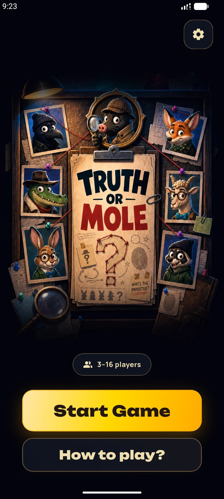

Ответьте на свой вопрос
Каждый игрок получает свой открытый вопрос или задание из одной случайно выбранной темы.
Игра для Android · 3–16 игроков · одно общее устройство
Передавайте телефон или планшет по кругу. В каждом раунде выбирается тема, а каждый игрок получает свой открытый вопрос или задание. Честные игроки отвечают правдиво. Скрытый Крот должен убедительно солгать — и пережить голосование.

Как играть
Приложение проведёт компанию через каждый ход, тайную роль, обсуждение, голосование и разоблачение.
Каждый игрок получает свой открытый вопрос или задание из одной случайно выбранной темы.
Обычные игроки отвечают честно. Крот отвечает на свой вопрос правдоподобной ложью.
Сравните ответы, следите за реакциями, назовите подозреваемого и узнайте, поймала ли компания Крота.
Реальные экраны игры
Все изображения взяты из текущей Android-версии — без концепт-интерфейса и воссозданного геймплея.


Каждый вечер — новое дело
Смешивайте темы для друзей, пар, семей, коллег, детей, свиданий, поездок и игровых вечеров.
Быстрые ответы оставляют меньше времени на идеальную историю.
Дополнительные тайные задания создают больше улик и громких обвинений.
Добавьте второго лжеца, если большая компания хочет более запутанное расследование.
До первого обвинения
Локальная игра на социальную дедукцию: большинство отвечает честно, а один или несколько скрытых Кротов должны блефовать и пережить голосование.
Нет. Вся компания использует один Android-телефон или планшет и передаёт его по кругу.
Нет. Каждый игрок получает свой открытый вопрос из выбранной темы. Крот лжёт, отвечая на назначенный ему вопрос.
Truth or Mole поддерживает от 3 до 16 игроков на одном устройстве.
В текущей Android-версии доступны английский, немецкий и русский языки.
Нет. Аккаунт Little Brush Games и код комнаты не требуются.
Стол готов
Скачайте Truth or Mole для Android и откройте первое дело сегодня вечером.